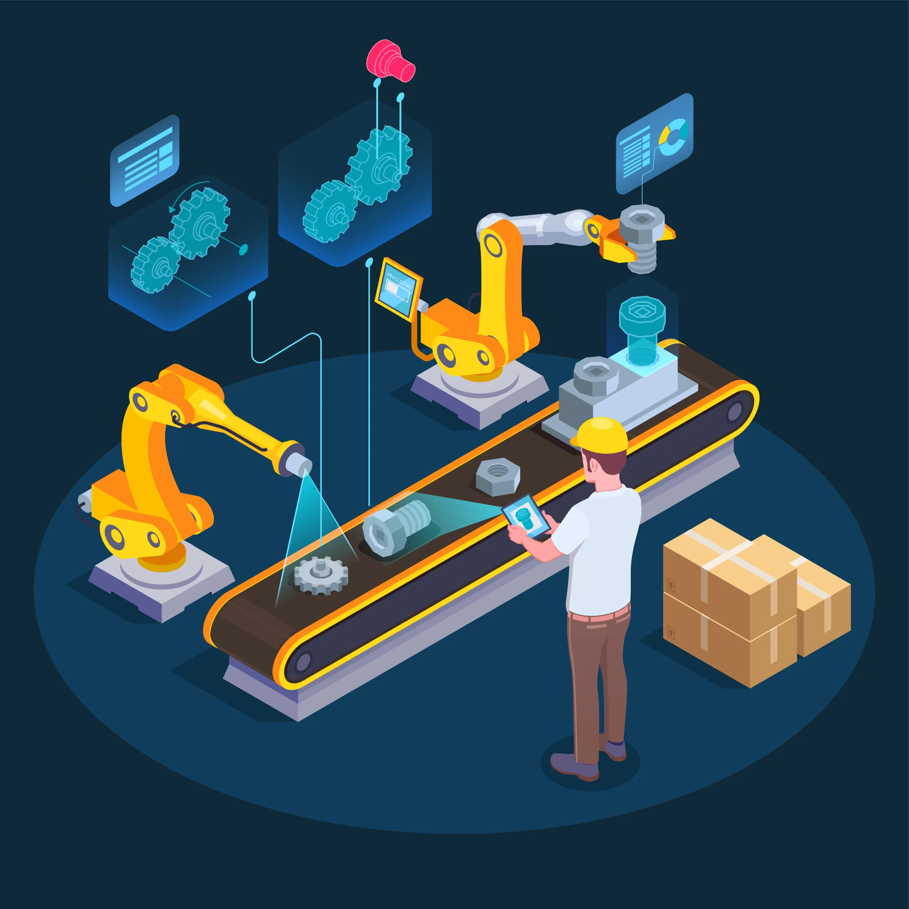

Advanced manufacturing cells and solutions.
Machinery, software and process support for bending, cutting, nesting, quoting and production management across industries.
Solution areas
Integrated manufacturing solutions that connect machines, software and people.
Cutting & Nesting
Laser, plasma and waterjet cutting platforms paired with intelligent nesting software — maximise material yield and minimise machine cycle time for every job.
- Fibre laser to 30 kW
- True-shape nesting algorithms
- Direct-to-machine program output
Bending & Forming
CNC press brakes and bending centres with offline programming, simulation and angle correction — first-time-right bending for simple brackets to complex multi-bend parts.
- Offline bend simulation
- Crowning and springback control
- Robotic part handling options
Inspection & Projection
Virtek LaserQC inspection and IRIS 3D laser projection for fast quality verification and assembly guidance — replace manual checks with instant digital validation.
- Full-field part scanning in seconds
- Laser-guided assembly placement
- Automatic GD&T reporting
Technology stack
Software that connects every stage of your fabrication workflow.
CAD / CAM / Nesting
Import 3D CAD models, auto-generate tool paths and nest parts for maximum material yield — integrated workflow from design to machine-ready NC code.
Quoting & Estimation
Generate accurate production quotes in minutes — automatic costing of material, machine time, consumables and labour for fast, consistent customer response.
Production Management
Real-time job scheduling, machine monitoring and OEE dashboards across your entire shop floor — data-driven decisions for maximum throughput.
Implementation process
From consultation to production — a proven three-step approach.

Assess & Design
Our engineers audit your current workflow, identify bottlenecks and design a manufacturing cell configuration that targets your highest-value improvements.
Install & Integrate
We install machinery, connect software, calibrate systems and train your operators — your cell is production-ready before we hand over the keys.
Optimise & Scale
Ongoing performance monitoring, process optimisation and capacity scaling — Cuttech stays engaged to maximise your return on investment over time.
Build your manufacturing cell
Tell us about your production challenges — our solutions team will design an integrated cell with the right machines, software and support.